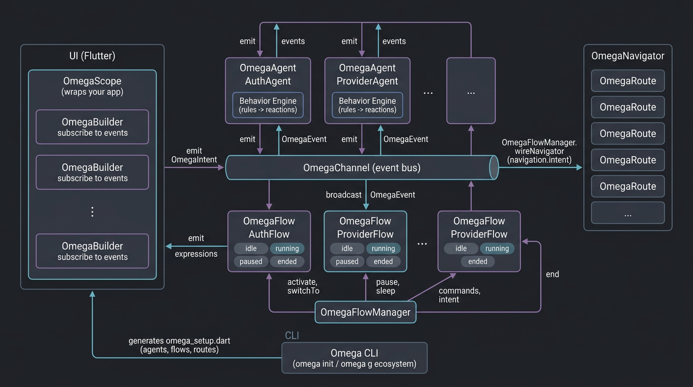

Omega
Architecture
El sistema nervioso autónomo para aplicaciones de alta complejidad en Flutter.
Esta web es la documentación completa de Omega. Incluye: flujo de datos paso a paso, glosario de términos, todo lo que ofrece el framework, ejemplos por caso de uso, conceptos core, comparativa con BLoC y Riverpod, diagrama, instalación, CLI, integración, ciclo de vida de flows, API reference de cada clase, persistencia, inspector y testing. Para más ejemplos en el repo: docs/GUIA.md y carpeta example/. App de ejemplo en producción con Omega: Kashira (arquitectura completa funcional).
Empezar con Omega
Instalación, primer uso y ejecución del ejemplo en tres pasos.
1. Añadir dependencia
En el pubspec.yaml de tu app Flutter:
dependencies:
omega_architecture: ^0.0.112. Inicializar en tu app
Desde la raíz del proyecto:
dart run omega_architecture:omega initCrea lib/omega/omega_setup.dart. Luego registra
agentes, flows y rutas en createOmegaConfig.
3. Crear un ecosistema (opcional):
dart run omega_architecture:omega g ecosystem Auth genera agente, flow,
behavior y página en el directorio actual y los registra en omega_setup.dart.
Ejecutar el ejemplo:
cd example && flutter run. Incluye login, navegación con payload tipado y uso
de OmegaRoute.typed<T> y payloadAs<T>.
Flujo de datos en Omega
En Omega la UI no llama métodos de negocio; emite intenciones. El canal, los flows y los agentes resuelven; la UI solo refleja el resultado.
Paso 1 — La UI emite un intent
El usuario pulsa "Iniciar sesión". La pantalla no llama a AuthService.login();
llama a
flowManager.handleIntent(OmegaIntent.fromName(AppIntent.authLogin, payload: creds)).
El intent lleva el nombre semántico ("auth.login") y los datos (credenciales).
Paso 2 — El flow (en running) recibe el intent
El OmegaFlowManager envía el intent solo a los flows que están en estado
running. El AuthFlow recibe en onIntent(ctx). Ahí puede: emitir
una expresión "loading" para la UI, y emitir un evento al canal para pedir trabajo al
agente:
channel.emit(OmegaEvent.fromName(AppEvent.authLoginRequest, payload: ctx.intent!.payload)).
Paso 3 — El agente reacciona y emite eventos
El agente está suscrito al canal. Su motor de comportamiento evalúa el
contexto (evento "auth.login.request") y devuelve una reacción, por ejemplo "doLogin" con el
payload. El agente ejecuta en onAction("doLogin", payload): llama a la API,
valida y emite emit("auth.login.success", payload: user) o
emit("auth.login.error", payload: error).
Paso 4 — El flow reacciona al evento y actualiza la UI / navega
El flow escucha el canal. Cuando llega "auth.login.success", en onEvent(ctx)
emite una expresión hacia la UI
(emitExpression("success", payload: ctx.event!.payload)) y, si corresponde, un
intent de navegación:
channel.emit(OmegaEvent(..., name: "navigation.intent", payload: OmegaIntent.fromName(AppIntent.navigateHome, payload: userData))).
Paso 5 — La UI y el navegador reaccionan
La pantalla está escuchando flow.expressions; al recibir "success" hace
setState y muestra el resultado. El OmegaNavigator (conectado al
canal con wireNavigator) recibe el evento "navigation.intent", extrae el intent
y hace pushReplacement a la ruta "home", pasando el payload como argumentos. La
pantalla home recibe los datos con tipo si usas
OmegaRoute.typed<LoginSuccessPayload>.
Glosario: definiciones clave
Términos que usarás en todo el ecosistema Omega.
| Término | Definición |
|---|---|
| Evento (OmegaEvent) | Representación de "algo que pasó" en el sistema. Tiene name (ej.
"auth.login.success") y payload opcional. Se publica en el canal y lo
reciben todos los suscritos (agentes, flows, OmegaBuilder). |
| Intent (OmegaIntent) | Petición de acción con significado de negocio: "quiero hacer login", "quiero ir a
home". La UI emite intents; no llama métodos. El FlowManager los reparte a los flows
en running. También se usan para navegación; el payload llega a la
pantalla como argumentos. |
| Expresión (OmegaFlowExpression) | Mensaje que un flow envía a la UI: "loading", "success", "error" (con tipo y
payload). La UI se suscribe a flow.expressions y se reconstruye. Así el
flow anuncia estado; la UI no pregunta "¿estás cargando?". |
| Canal (OmegaChannel) | Bus de eventos global. Punto único de comunicación: cualquiera puede
emit(OmegaEvent) y cualquiera puede suscribirse a events.
Desacopla quién emite de quién escucha. |
| Agente (OmegaAgent) | Unidad de lógica autónoma con id, canal y motor de comportamiento.
Reacciona a eventos (y opcionalmente a intents directos). El behavior devuelve una
reacción (acción + payload); el agente ejecuta en onAction y puede
emitir nuevos eventos. Encapsula lógica testeable sin Flutter. |
| Flow (OmegaFlow) | Flujo de negocio (login, checkout, etc.) con estados (idle, running, paused,
sleeping, ended). Solo en running procesa eventos e intents. Orquesta:
recibe intents de la UI, emite eventos para los agentes, escucha eventos, emite
expresiones para la UI y emite intents de navegación. |
| FlowManager (OmegaFlowManager) | Registra flows, los activa/pausa (activate, switchTo) y
reparte los intents solo a los que están en running. Conecta el canal
al navegador (wireNavigator) para que "navigate.*" y
"navigation.intent" cambien de pantalla. |
| Behavior (motor de comportamiento) | Define cuándo un agente reacciona y qué acción devolver. Se compone de reglas
(condición + reacción). Evalúa el contexto (evento o intent) y devuelve la primera
OmegaAgentReaction que coincida. |
| Snapshot | Foto del estado: de un flow (OmegaFlowSnapshot) o de toda la app (OmegaAppSnapshot). Incluye flowId, state, memory y última expresión. Sirve para depuración, persistencia (guardar/restaurar al cerrar/abrir) y herramientas tipo time-travel. |
Todo lo que ofrece Omega
Un resumen de capacidades y herramientas del framework.
Comunicación y semántica
- Bus de eventos global (
OmegaChannel): emit y listen desacoplados. - Eventos con nombre y payload; nombres tipados con
OmegaEventNameyOmegaEvent.fromName. - Intents con nombre y payload; nombres tipados con
OmegaIntentNameyOmegaIntent.fromName. - Lectura de payload con tipo:
payloadAs<T>()en eventos, intents y expresiones.
Agentes y comportamiento
- Agentes autónomos (
OmegaAgent) con id, canal y motor de comportamiento. - Motor de reglas (
OmegaAgentBehaviorEngine):addRule(condition, reaction). - Contexto de evaluación (
OmegaAgentBehaviorContext): event, intent, state. - Reacción:
OmegaAgentReaction(action, payload)ejecutada enonAction. - Protocolo de agentes: mensajes directos (
send) y broadcast.
Flows y orquestación
- Flows de negocio (
OmegaFlow) con estados: idle, running, sleeping, paused, ended. OmegaFlowManager: registerFlow, activate, switchTo, handleIntent, wireNavigator.- Expresiones hacia la UI:
emitExpression(type, payload); la UI escuchaexpressions. - Memoria por flow (
memory) que persiste y se incluye en el snapshot. - Snapshot por flow y de toda la app; toJson/fromJson para persistencia.
UI, navegación y bootstrap
OmegaScope: inyección de channel y flowManager;OmegaScope.of(context).OmegaBuilder: widget que reacciona a un evento del canal (opcionalmente por eventName).- Navegación desacoplada: "navigate.id" (pushReplacement), "navigate.push.id" (push); payload → arguments.
- Rutas tipadas:
OmegaRoute.typed<T>yrouteArguments<T>(context). OmegaConfigyOmegaRuntime.bootstrap: un solo punto de arranque; initialFlowId opcional.
Persistencia, inspector y CLI
- Persistencia: getAppSnapshot → toJson → guardar; al abrir, fromJson →
restoreFromSnapshot. Interfaz
OmegaSnapshotStorage(save/load) para implementar con disco o backend. - Inspector: panel de debug (OmegaInspector) con últimos eventos y snapshot de flows. En web: OmegaInspectorLauncher abre ventana aparte; OmegaInspectorReceiver muestra los datos por BroadcastChannel.
- CLI:
omega doc(abre esta documentación),omega init(crea omega_setup.dart),omega g ecosystem <Nombre>,omega g agent <Nombre>,omega g flow <Nombre>,omega validate. Genera archivos en el directorio actual y actualiza omega_setup.
Superando los Límites Tradicionales
El Techo de Cristal de BLoC
Rigidez estructural. Acoplamiento fuerte entre Streams y Widgets. Complejidad exponencial en apps grandes.
El Laberinto de Riverpod
Dificultad de trazabilidad. Fragmentación de Providers. Curva de aprendizaje técnica sobre la semántica del negocio.
El Cambio de Paradigma
En Omega, la lógica no "vive" en la UI. La lógica reside en Agentes Autónomos que operan de forma independiente, comunicándose a través de una Capa Semántica.
UI as a Mirror
La interfaz es un espejo "tonto" que refleja las expresiones del proceso de negocio.
Actor-Based
Inspirado en el modelo de actores de Elixir/Erlang para un aislamiento total de responsabilidades.
Scalable-First
Diseñado para equipos grandes donde la modularidad es el único camino al éxito.
Arquitectura Evolutiva
Inteligencia Distribuida
Agentes autónomos reducen la carga del hilo principal y desacoplan la lógica del ciclo de vida del widget.
Bus Global Reactivo
Canales de comunicación asíncronos permiten una observabilidad del 100% de la actividad del sistema.
Capa Semántica
Intenciones y Expresiones eliminan el acoplamiento directo entre la intención del usuario y la respuesta del sistema.
Arquitectura Desacoplada
// El Agente: Cerebro de la lógica
class AuthAgent extends OmegaAgent {
void _login(credentials) {
emit("auth.login.success", payload: user);
}
}
// El Flow: Orquestador de navegación
class AuthFlow extends OmegaFlow {
void onEvent(ctx) {
if (ctx.event?.name == "auth.login.success") {
emitExpression("success");
navigate("home");
}
}
}
Desacoplamiento Atómico
El código de negocio no menciona widgets, ni contextos, ni rutas. Es lógica pura, 100% portable y testeable en segundos sin necesidad de emuladores.
Visión general de Omega
Diagrama de alto nivel que muestra cómo interactúan la UI, los agentes, los flows, el canal de eventos, el FlowManager, el navegador y el CLI.

Omega vs BLoC vs Riverpod
Estado observable, persistible y reproducible; agentes, flows e intents en el centro; la UI solo refleja. Con snapshot, inspector y persistencia/restore.
| Característica | Omega Architecture | BLoC / Riverpod |
|---|---|---|
| Autonomía de Lógica | ✔ Agentes Independientes | ✘ Dependientes de UI/Providers |
| Trazabilidad Semántica | ✔ Nativa (Event Bus) | ✘ Manual (Debug Print) |
| Navegación Desacoplada | ✔ Sí (via Flows) | ✘ No (via BuildContext) |
| Escalabilidad en Equipos | ✔ Modular (Micro-Agents) | ✘ Propenso a "Spaguetti" |
Omega vs BLoC: La lógica en Omega vive en agentes que no conocen la UI; en
BLoC está en Blocs atados a Streams y widgets. Omega desacopla la navegación (intents); BLoC
suele usar BuildContext.
Omega vs Riverpod: Riverpod es muy flexible
(providers, ref); Omega fija un modelo (agentes + flows + canal) y da trazabilidad explícita
(eventos/intents con nombre). Navegación en Omega sin depender de context.
Documentación ampliada
(tabla detallada y cuándo elegir cada uno): docs/COMPARATIVA.md en el repo.
Cuándo elegir Omega
Elige Omega si...
Quieres lógica de negocio fuera de la UI y fácil de testear sin Flutter, navegación desacoplada, equipos que necesitan estructura clara (agentes, flows, intents) o apps con mucha complejidad.
BLoC o Riverpod si...
Prefieres algo muy adoptado (documentación, ejemplos, comunidad), te basta con eventos→estados→UI o con providers flexibles y no necesitas el modelo de agentes ni la capa de intents.
Omega no compite en popularidad; se diferencia
por agentes + behavior + canal + flows + intents y navegación sin
BuildContext. Es arquitectura, no solo state management.
La importancia de Omega
Un framework que une arquitectura clara, desacoplamiento real y herramientas desde el primer día.
Omega no es "un BLoC más". Es una forma de organizar la aplicación donde la lógica de negocio vive en agentes, la orquestación en flujos y la UI solo refleja lo que el sistema decide. Eso reduce bugs, acelera los tests y escala con el equipo.
Claridad desde el día uno
Sabes dónde va cada cosa: agentes para lógica, flows para orquestar, intents para comunicar. Sin adivinar en qué Provider o Bloc tocó cada regla.
Testeable de verdad
La lógica no depende de Flutter. Puedes probar agentes y flujos con tests unitarios
puros, sin pumpWidget ni mocks de contexto.
Escalable por diseño
Ecosistemas (agent + flow + behavior + UI) permiten que varios desarrolladores trabajen en features sin pisarse. El CLI genera la estructura consistente.
Por qué vale la pena usarlo
Menos acoplamiento, menos deuda
La UI no conoce rutas ni contextos de navegación. Los flujos emiten intenciones; el navegador reacciona. Cambiar pantallas o flujos no rompe la lógica de negocio.
Trazabilidad semántica
Eventos e intents tienen nombre y payload. Puedes seguir "quién pidió qué" y "quién respondió" sin depender de prints ni debugging a ciegas.
Un solo lugar para la configuración
omega_setup.dart en tu app concentra agentes, flujos y rutas. Un vistazo y
entiendes cómo está montada la aplicación.
Inversión baja, beneficio alto
omega init y omega g ecosystem generan la estructura. Te
enfocas en reglas de negocio y UX, no en montar capas a mano.
En resumen: Omega vale la pena cuando quieres una arquitectura que escale con la complejidad, que sea fácil de testear y que todo el equipo pueda seguir sin perderse en Providers o Blocs dispersos.
Sobre el software
Omega es un framework reactivo y basado en agentes para Flutter: la lógica de negocio vive en agentes y flows que se comunican por un canal de eventos; la UI solo emite intenciones y reacciona a eventos y expresiones.
Definición breve: En Omega, evento = "algo que pasó" (se emite al canal). Intent = "quiero que pase esto" (la UI lo emite; el FlowManager lo reparte a los flows en running). Expresión = mensaje del flow a la UI ("loading", "success", "error"). Agentes y flows escuchan eventos; los flows además reciben intents y emiten expresiones e intents de navegación.
Agentes reactivos
Entidades autónomas con id, canal y motor de comportamiento. Reaccionan a eventos del
sistema (y a intents si el flow les delega). Ejecutan la lógica en onAction
y emiten nuevos eventos. Testeables sin Flutter.
Motor de comportamiento
Conjunto de reglas (condición + reacción). Evalúa el contexto (evento o intent) y
devuelve la primera OmegaAgentReaction que coincida. Así el agente no es un
switch gigante; se compone por reglas.
Event-driven
Todo pasa por OmegaChannel: emit(OmegaEvent) y suscripción a
events. Agentes y flows se suscriben; la UI puede usar
OmegaBuilder para reaccionar a un evento concreto.
Gestión de flujos
OmegaFlow orquesta un caso de uso (login, checkout). Tiene estados (idle,
running, paused, sleeping, ended); solo en running procesa eventos e
intents. OmegaFlowManager registra flows, activa/pausa y reparte intents.
Varios flows pueden estar activos a la vez con activate(id);
switchTo(id) deja solo uno activo.
Intenciones semánticas
OmegaIntent representa una petición con nombre (ej. "auth.login",
"navigate.home") y payload. La UI no llama métodos; emite intents. Para nombres tipados:
enum que implementa OmegaIntentName y
OmegaIntent.fromName(AppIntent.xxx, payload: ...). Para navegación, el
payload del intent llega a la pantalla como argumentos (con
OmegaRoute.typed<T> la vista recibe el tipo directamente).
Ejemplos por caso de uso
Código típico para los escenarios más comunes.
App de ejemplo en producción (Omega completo): Kashira — yefersonsegura.com/projects/kashira/
Emitir un evento y escucharlo (canal)
final channel = OmegaChannel();
channel.emit(OmegaEvent.fromName(AppEvent.userUpdated, payload: user));
channel.events.listen((e) {
if (e.name == AppEvent.userUpdated.name) {
final u = e.payloadAs<User>();
if (u != null) refreshUI(u);
}
});La UI pide login (intent + flow + agente)
// En la pantalla de login
scope.flowManager.handleIntent(
OmegaIntent.fromName(AppIntent.authLogin, payload: LoginCredentials(email: e, password: p)),
);
// El flow en onIntent emite "loading" y pide al agente
channel.emit(OmegaEvent.fromName(AppEvent.authLoginRequest, payload: ctx.intent!.payload));
// El agente en onAction hace la API y emite success/error
emit("auth.login.success", payload: LoginSuccessPayload(token: t, user: u));Navegar a una pantalla con datos tipados
// Desde el flow, tras login correcto
channel.emit(OmegaEvent.fromName(
AppEvent.navigationIntent,
payload: OmegaIntent.fromName(AppIntent.navigateHome, payload: userData),
));
// Registro de ruta tipada (en omega_setup)
navigator.registerRoute(OmegaRoute.typed<LoginSuccessPayload>(
id: "home",
builder: (context, userData) => HomePage(userData: userData),
));
// En HomePage recibes userData ya como LoginSuccessPayload?Guardar y restaurar estado (persistencia)
// Al cerrar o en punto de guardado
final snapshot = flowManager.getAppSnapshot();
await prefs.setString("omega_state", jsonEncode(snapshot.toJson()));
// Al abrir la app
final loaded = prefs.getString("omega_state");
if (loaded != null) {
final snapshot = OmegaAppSnapshot.fromJson(jsonDecode(loaded));
flowManager.restoreFromSnapshot(snapshot);
}Mostrar el inspector en debug
if (kDebugMode)
Stack(
children: [
MyApp(),
Positioned(right: 0, top: 0, child: OmegaInspector(eventLimit: 20)),
],
)
// En web: OmegaInspectorLauncher en la AppBar abre la ventana aparteKashira: ejemplo en producción
Sistema POS (punto de venta) construido con Omega Architecture. Pequeñas y medianas tiendas: ventas, inventario, productos y reportes en tiempo real.
App en vivo: yefersonsegura.com/projects/kashira/
Visión
Registrar ventas, administrar inventario, gestionar productos y consultar reportes desde una app intuitiva. Control de operaciones diarias, productos más vendidos, stock actualizado e historial de ventas. Gestión simple para mejorar organización y decisiones.
Por qué Omega en Kashira
- Un solo canal: toda la comunicación por
OmegaChannel(emit/onEvent). - Agentes y flujos por dominio: Auth, Theme, Home, Ventas, Inventory, Productos (Agent + Flow cada uno).
- Behaviors: reglas que traducen eventos en acciones
(
OmegaBehaviorEngine). - Navegación declarativa: rutas en configuración; UI emite intents, Omega resuelve a Navigator.
- Tipado:
KashiraEvent,KashiraIntent,OmegaRoute.typed<T>(),payloadAs<T>(). - Snapshots: persistencia de estado de flujos al reabrir la app.
- Inspector: en debug, ventana/dialog para eventos y snapshots.
Componentes Omega usados
| Componente | Uso en Kashira |
|---|---|
OmegaChannel |
Canal único de eventos; emisión desde UI y agentes. |
OmegaAgent |
Auth, Theme, Home, Productos, Inventory, Ventas. |
OmegaFlow |
Un flow por dominio; escucha eventos y emite expresiones al UI. |
OmegaFlowManager |
Registro y activación de flujos; activate(flowId),
restoreFromSnapshot. |
OmegaBehaviorEngine |
Behaviors por agente: auth, theme, ventas, inventory, productos, home. |
OmegaNavigator |
Rutas: login, home, ventas, inventory, productoForm, etc. |
OmegaRoute / OmegaRoute.typed<T>() |
Ruta productoForm recibe Producto? tipado. |
OmegaEvent / OmegaIntent |
Nombres tipados (KashiraEvent, KashiraIntent). |
OmegaScope |
Provee channel, flowManager, initialFlowId.
|
OmegaAppSnapshot / OmegaSnapshotStorage |
Guardado/carga de estado al pausar/cerrar. |
OmegaInspectorLauncher / OmegaInspectorReceiver |
Depuración de eventos y snapshots (debug). |
Flujos y agentes por dominio
| Flow / Agent | Responsabilidad |
|---|---|
| Theme | Modo claro/oscuro; persistencia en ThemeStorage. |
| Auth | Login, logout, restauración de sesión; navegación tras login. |
| Home | Punto de entrada del dashboard. |
| Ventas | Productos para venta, creación de venta (servicio simulado). |
| Inventory | Resumen de stock, movimientos (servicio simulado). |
| Productos | Catálogo y categorías; navegación a formulario de producto. |
Eventos e intents (tipados)
Centralizados en kashira_semantics.dart: eventos
(KashiraEvent) como navigationIntent, themeRequest,
authLoginRequest, productosLoadRequest, ventasCrearVenta,
etc.; intents (KashiraIntent) como navigateLogin,
navigateHome, navigatePushProductoForm, authLogin, etc.
Uso:
OmegaEvent.fromName(KashiraEvent.navigationIntent, payload: OmegaIntent.fromName(KashiraIntent.navigateHome)).
Rutas
Definidas en omega_setup.dart: login,
register, home, ventas, inventory,
productoForm (tipada con Producto?).
Stack técnico
Flutter (móvil + web), omega_architecture ^0.0.13,
shared_preferences (móvil/desktop), web (localStorage en web para
sesión, tema y snapshots).
Características principales
- Ventas: registro rápido, carrito, descuentos, búsqueda por categoría, moneda S/.
- Inventario: resumen de stock, alertas, movimientos, ajustes.
- Productos: catálogo (código/SKU, categoría, precios), formulario
alta/edición (ruta tipada
Producto?). - Tema: claro/oscuro con Omega (ThemeFlow/ThemeAgent) y persistencia.
- Sesión: login y restauración; persistencia según plataforma.
- Reportes: historial de ventas y vistas para análisis.
Estructura del proyecto (Kashira)
lib/
├── main.dart # Bootstrap Omega, tema, snapshots, inspector
├── core/ # theme, storage (session/theme/snapshot io+web), utils
├── omega/
│ ├── omega_setup.dart # OmegaConfig: agents, flows, routes
│ └── kashira_semantics.dart # KashiraEvent, KashiraIntent
└── features/
├── auth/ # AuthAgent, AuthFlow, auth_behavior, auth_page
├── theme/ # ThemeAgent, ThemeFlow, theme_behavior
├── home/ # HomeAgent, HomeFlow, home_behavior, home_page
├── ventas/ # VentasAgent, VentasFlow, ventas_behavior, ventas_page, service
├── inventory/ # InventoryAgent, InventoryFlow, inventory_behavior, inventory_page, service
└── productos/ # ProductosAgent, ProductosFlow, producto_form_page, service, producto_modelObjetivo: solución accesible y confiable para digitalizar pequeños negocios y optimizar ventas e inventario, con arquitectura clara y mantenible gracias a Omega.
Conceptos core
Resumen de cada pieza del sistema y su rol.
| Concepto | Descripción |
|---|---|
| OmegaChannel | Bus de eventos central. emit(OmegaEvent) para publicar;
events (Stream) para suscribirse. Todos los agentes y flows usan el
mismo canal. Quien lo crea debe llamar dispose() al cerrar. |
| OmegaEvent | Representa "algo que pasó". Campos: id, name,
payload. Crear con
OmegaEvent.fromName(OmegaEventName, payload) para nombres tipados. Leer
payload con tipo: event.payloadAs<T>(). |
| OmegaIntent | Petición de acción con name y payload. La UI emite intents
vía flowManager.handleIntent(intent). Para navegación el payload se
pasa como argumentos de ruta. Nombres tipados:
OmegaIntent.fromName(OmegaIntentName, payload). |
| OmegaAgent | Unidad de lógica autónoma: id, channel,
behavior. Se suscribe al canal; el behavior evalúa contexto y devuelve
OmegaAgentReaction; el agente ejecuta en
onAction(action, payload) y puede emit(name, payload).
Llamar dispose() al cerrar. |
| OmegaAgentBehaviorEngine | Motor de reglas. addRule(OmegaAgentBehaviorRule(condition, reaction)).
evaluate(OmegaAgentBehaviorContext) devuelve la primera reacción cuya
condición se cumpla, o null. |
| OmegaFlow | Flujo de negocio con estados (idle, running, sleeping, paused, ended). Solo en
running procesa onEvent y onIntent. Emite
expresiones a la UI con emitExpression(type, payload); la UI escucha
expressions. Tiene memory (mapa) y
getSnapshot() / restoreMemory(). |
| OmegaFlowManager | Registra flows con registerFlow(flow). activate(id) activa
sin pausar otros; switchTo(id) activa uno y pausa el resto.
handleIntent(intent) envía el intent a todos los flows en running.
wireNavigator(navigator) conecta el canal al navegador.
getAppSnapshot() y restoreFromSnapshot(snapshot) para
persistencia. |
| OmegaFlowExpression | Mensaje del flow a la UI: type ("loading", "success", "error") y
payload. Leer con tipo: expr.payloadAs<T>(). La UI
se suscribe a flow.expressions. |
| OmegaScope / OmegaBuilder | OmegaScope inyecta channel y flowManager; cualquier hijo
usa OmegaScope.of(context). OmegaBuilder es un widget que se
reconstruye cuando llega un evento (opcionalmente filtrando por
eventName). |
| OmegaNavigator / OmegaRoute | Navigator traduce "navigate.id" (pushReplacement) y "navigate.push.id" (push); el
payload del intent va a RouteSettings.arguments. Rutas con
registerRoute(OmegaRoute).
OmegaRoute.typed<T>(id, builder: (context, T? args)) para que la
pantalla reciba el tipo sin castear; alternativamente
routeArguments<T>(context). |
Casos de uso
Apps de alta complejidad
Múltiples flujos (auth, checkout, onboarding) con lógica desacoplada y trazabilidad clara.
Equipos grandes
Modularidad por ecosistemas (agent + flow + behavior + UI). Cada feature puede desarrollarse de forma aislada.
Testing sin UI
Lógica de negocio en agentes y flujos, 100% testeable sin emuladores ni widgets.
Navegación desacoplada
Los flujos emiten intenciones de navegación; el navegador reacciona sin depender del
BuildContext.
Instalación
En tu app host (el
proyecto Flutter que usa Omega), añade la dependencia. El archivo omega_setup.dart
se crea en tu app con omega init, no viene dentro de la librería. Ahí defines
createOmegaConfig(OmegaChannel) con la lista de agentes, flows y rutas que el
runtime registrará.
Añade en tu pubspec.yaml
(desde pub.dev):
dependencies:
omega_architecture: ^0.0.11Ejemplo completo en el paquete: La carpeta example/ contiene
una app con flujo de login: pantalla de login que emite intents con
LoginCredentials, agente que valida y emite success/error con
LoginSuccessPayload, flow que reacciona en onIntent y
onEvent, navegación a home con ruta tipada
OmegaRoute.typed<LoginSuccessPayload> y uso de
payloadAs<T>() en eventos y expresiones. Ejecutar con
cd example && flutter run.
Omega CLI
El CLI se ejecuta en tu app (la que usa omega_architecture). Resuelve la raíz de tu proyecto y crea/actualiza archivos en tu proyecto, no dentro del paquete.
Desde un proyecto que dependa de
omega_architecture:
dart run omega_architecture:omega <comando> [opciones] [argumentos]| Comando | Descripción |
|---|---|
doc |
Abre la documentación web oficial en el navegador
(dart run omega_architecture:omega doc abre la doc en línea). |
init [--force] |
Crea lib/omega/omega_setup.dart en tu app. Ahí defines
rutas, agentes y flujos. Ejecuta desde la raíz del proyecto. --force
sobrescribe. |
g ecosystem <Nombre> |
Genera agente, flow, behavior y página en el directorio actual.
Registra agente y flow en omega_setup.dart (actualiza imports y añade
flows: si no existía). |
g agent <Nombre> |
Genera solo agente + behavior en el directorio actual. Actualiza
solo el import y registro del agente en
omega_setup.dart (no toca el flow). |
g flow <Nombre> |
Genera solo flow en el directorio actual. Actualiza solo el import
y registro del flow en omega_setup.dart (no toca el agente). |
validate |
Comprueba omega_setup.dart: estructura (createOmegaConfig,
agents:) e ids duplicados. Ejecuta desde la raíz del proyecto. |
Flujo de g ecosystem: 1) Resuelve la raíz del proyecto (donde
está pubspec.yaml). 2) Busca lib/omega/omega_setup.dart; si no
existe, pide ejecutar omega init. 3) Crea los archivos en el directorio
actual. 4) Actualiza omega_setup.dart: quita imports viejos de ese
ecosistema, pone los nuevos, y registra agente y flow. g agent y
g flow solo modifican su propio import y registro, así que puedes
crear agente y flow por separado para el mismo nombre sin que uno borre al otro.
Opciones globales:
-h, --help · -v, --version
dart run omega_architecture:omega doc
dart run omega_architecture:omega init
dart run omega_architecture:omega g ecosystem Auth
dart run omega_architecture:omega g agent Orders
dart run omega_architecture:omega g flow Orders
dart run omega_architecture:omega validateDónde
ejecutar: init y validate desde la raíz de tu app (donde
está pubspec.yaml). g ecosystem, g agent y
g flow desde la carpeta donde quieras que se creen los archivos.
Uso: agente y behavior
El agente se suscribe al canal; cuando
llega un evento (o un intent), el behavior evalúa el contexto y devuelve una
reacción (acción + payload); el agente ejecuta en onAction. Puedes usar reglas con
addRule en lugar de sobrescribir evaluate.
// Opción 1: reglas (recomendado)
class AuthBehavior extends OmegaAgentBehaviorEngine {
AuthBehavior() {
addRule(OmegaAgentBehaviorRule(
condition: (ctx) => ctx.event?.name == AppEvent.authLoginRequest.name,
reaction: (ctx) => OmegaAgentReaction("doLogin", payload: ctx.event?.payload),
));
}
}
class AuthAgent extends OmegaAgent {
AuthAgent(OmegaChannel c) : super(id: "Auth", channel: c, behavior: AuthBehavior());
@override void onMessage(OmegaAgentMessage msg) {}
@override
void onAction(String action, dynamic payload) {
if (action == "doLogin") _login(payload);
}
void _login(dynamic payload) {
final creds = payload is LoginCredentials ? payload : null;
if (creds == null) { emit("auth.login.error", payload: OmegaFailure(...)); return; }
// API call... luego:
emit("auth.login.success", payload: LoginSuccessPayload(token: t, user: u));
}
}Flujo
Canal emite evento → agente recibe → behavior evalúa contexto (event/intent) → devuelve
OmegaAgentReaction("doLogin", payload) →
onAction("doLogin", payload) ejecuta la lógica (p. ej. llamar API) y emite
"auth.login.success" o "auth.login.error".
Payload tipado
En el agente puedes comprobar payload is LoginCredentials o recibir el
intent desde el flow y usar intent.payloadAs<LoginCredentials>().
Emite eventos con payloads tipados (ej. LoginSuccessPayload) para que el
flow y la UI usen payloadAs<T>().
Integrar Omega en tu app host
Pasos: 1) Bootstrap del runtime. 2)
OmegaScope con channel, flowManager e initialFlowId. 3)
MaterialApp con navigatorKey. 4) En el primer frame: activar el flow inicial y
emitir la navegación inicial (p. ej. a login). Opcional: en web, mostrar solo el Inspector si la
URL lleva ?omega_inspector=1.
1. main.dart — Bootstrap y OmegaScope
// lib/main.dart
void main() {
// Opcional: en web, ventana del inspector (OmegaInspectorLauncher abre con ?omega_inspector=1)
if (Uri.base.queryParameters['omega_inspector'] == '1') {
runApp(MaterialApp(home: const OmegaInspectorReceiver()));
return;
}
final runtime = OmegaRuntime.bootstrap(createOmegaConfig);
runApp(
OmegaScope(
channel: runtime.channel,
flowManager: runtime.flowManager,
initialFlowId: runtime.initialFlowId, // ej. "authFlow"
child: MyApp(navigator: runtime.navigator),
),
);
}
class MyApp extends StatelessWidget {
final OmegaNavigator navigator;
const MyApp({super.key, required this.navigator});
@override
Widget build(BuildContext context) {
return MaterialApp(
navigatorKey: navigator.navigatorKey,
home: const _RootHandler(),
);
}
}2. RootHandler — Activar flow inicial y navegar
class _RootHandler extends StatefulWidget {
const _RootHandler();
@override
State<_RootHandler> createState() => _RootHandlerState();
}
class _RootHandlerState extends State<_RootHandler> {
@override
void initState() {
super.initState();
WidgetsBinding.instance.addPostFrameCallback((_) {
final scope = OmegaScope.of(context);
// 1) Activar el flow inicial (definido en createOmegaConfig con initialFlowId)
if (scope.initialFlowId != null) {
scope.flowManager.switchTo(scope.initialFlowId!);
}
// 2) Navegar a la primera pantalla (p. ej. login) con nombres tipados
final intent = OmegaIntent.fromName(AppIntent.navigateLogin);
scope.channel.emit(
OmegaEvent.fromName(AppEvent.navigationIntent, payload: intent),
);
});
}
@override
Widget build(BuildContext context) {
return Scaffold(
appBar: kDebugMode ? AppBar(actions: const [OmegaInspectorLauncher()]) : null,
body: const Center(child: Text("Omega Running")),
);
}
}3. omega_setup.dart — Config (agentes, flows, rutas, initialFlowId)
// lib/omega/omega_setup.dart (creado con omega init / omega g ecosystem)
OmegaConfig createOmegaConfig(OmegaChannel channel) {
return OmegaConfig(
agents: [AuthAgent(channel), ProviderAgent(channel)],
flows: [AuthFlow(channel), ProviderFlow(channel)],
routes: [
OmegaRoute(id: "login", builder: (context) => const LoginPage()),
OmegaRoute.typed<LoginSuccessPayload>(id: "home", builder: (context, userData) => HomePage(userData: userData)),
],
initialFlowId: "authFlow",
);
}Resumen: createOmegaConfig se define en
lib/omega/omega_setup.dart (omega init / g ecosystem). Incluye
initialFlowId para que el RootHandler active ese flow en el primer frame. Usa
OmegaIntent.fromName y OmegaEvent.fromName con tus enums
(AppIntent, AppEvent) para evitar strings mágicos. Rutas tipadas con
OmegaRoute.typed<T> para que la pantalla reciba el payload con tipo. Al
cerrar la app, quien tenga referencia al runtime puede llamar channel.dispose()
y flowManager.dispose() si es necesario.
Flutter: OmegaScope y OmegaBuilder
OmegaScope proporciona el canal y el flow manager a toda la UI. OmegaBuilder permite que una parte del árbol reaccione a un evento del canal sin que la pantalla conozca el flow.
OmegaScope (inyección de dependencias)
Envuelve la app (normalmente en main) con channel,
flowManager y opcionalmente initialFlowId. Cualquier hijo
accede con OmegaScope.of(context) para hacer handleIntent,
emitir eventos o obtener el flow y escuchar expressions.
runApp(
OmegaScope(
channel: runtime.channel,
flowManager: runtime.flowManager,
initialFlowId: runtime.initialFlowId,
child: MaterialApp(...),
),
);
// En una pantalla:
final scope = OmegaScope.of(context);
scope.flowManager.handleIntent(...);OmegaBuilder (UI reactiva a un evento)
Widget que se reconstruye cuando llega un evento al canal. Si indicas
eventName, solo reacciona a ese nombre. Útil para mostrar un banner de
error global ("auth.login.error") o un mensaje "user.updated" sin que la pantalla
conozca el flow. Requiere OmegaScope en el árbol.
OmegaBuilder(
eventName: AppEvent.authLoginError.name,
builder: (context, event) {
final err = event?.payloadAs<OmegaFailure>();
return err != null ? Text(err.message) : SizedBox.shrink();
},
)Ciclo de vida de un flow
Un OmegaFlow solo procesa eventos e intenciones cuando está en estado
running.
Activar o no un flow define si participa o no en la orquestación.
Estados del flow
- idle: creado pero aún no ha empezado. No procesa nada.
- running: activo. Recibe eventos/intents y ejecuta
onEvent/onIntent. Se llamaonStart()al entrar. - sleeping: mantiene memoria, pero ignora eventos/intents. Útil para “hibernar” lógica.
- paused: detenido temporalmente. No procesa nada hasta reactivarlo.
- ended: finalizado. Cierra su stream de expresiones y libera recursos.
Activar y desactivar
flowManager.activate("flowId"): pone el flow enrunningsin tocar los demás. Puedes tener varios flows activos a la vez.flowManager.switchTo("flowId"): activa uno y pausa los que estaban enrunning. Ideal para un solo flow “principal”.flowManager.activateExclusive("flowId"): similar aswitchTo, pero no valida si el id existe; es más “agresivo”.- Si no activas un flow: se queda en
idle, no procesa eventos/intents y suonStart()nunca se llama.
Pausar, dormir y finalizar
flowManager.pause("flowId"): pasa el flow apaused. No procesa nada hasta reactivarlo conactivateoswitchTo.flowManager.sleep("flowId"): llama asleep()en el flow (estadosleeping). Mantiene memoria, pero está “en reposo”.flowManager.end("flowId"): llama aend()(estadoended) y ya no debería volver a usarse.flowManager.endAll(): finaliza todos los flows registrados y limpia elactiveFlowId.
Consecuencias prácticas
- Solo los flows en
runningrecibenOmegaIntentdesdehandleIntent. - Si una pantalla depende de las expresiones de un flow, debes asegurarte de activarlo
antes (por ejemplo en un
RootHandlero tras login). - Usa
switchTocuando quieras un único flow “dueño” de la navegación y la experiencia principal. - Usa
activatecuando quieras varios flows colaborando en paralelo (por ejemplo, notificaciones + auth + carrito).
Ciclo de vida y dispose
| Componente | Responsabilidad |
|---|---|
| OmegaChannel | Quien lo cree debe llamar a channel.dispose() al cerrar la app. |
| OmegaFlowManager | Llamar a flowManager.dispose() para cancelar la suscripción de
wireNavigator. |
| OmegaAgent | Llamar a agent.dispose() para cancelar la suscripción al canal. |
| OmegaScope | No hace dispose; el widget que cree channel y flowManager debe llamar a sus
dispose() en State.dispose. |
Estructura del proyecto
lib/
├── omega/
│ ├── core/ # Channel, events, intents, types
│ ├── agents/ # OmegaAgent, behavior engine, protocol
│ ├── flows/ # OmegaFlow, OmegaFlowManager, expressions
│ ├── ui/ # OmegaScope, OmegaBuilder, navigation
│ └── bootstrap/ # Config, runtime
├── example/ # Ejemplo completo
└── omega_architecture.dart # Exportaciones públicasContratos declarativos
Un contrato declara qué eventos escucha un flow, qué intents acepta y qué tipos de expresión emite (y lo mismo para agentes: eventos e intents). En modo debug, Omega avisa en consola cuando llega o se emite algo no declarado; así aseguras que se cumplan los datos que definiste.
¿Para qué sirve? Documentar límites del flow/agente, detectar typos o nombres
equivocados en desarrollo y sentar base para modo strict o Inspector que muestre "qué espera
este flow". Es opcional: si no defines contract, todo sigue igual.
Ejemplo de referencia: La app example/
del paquete implementa contratos en AuthFlow y AuthAgent. Ejecuta
cd example && flutter run para ver login/logout con contratos; en debug, cualquier
evento o intent no declarado mostrará un aviso en consola. Usa esa app como referencia al añadir
contratos a tus flows y agentes.
Contrato de flow (OmegaFlowContract)
Override contract en tu flow y devuelve
un OmegaFlowContract con los nombres de eventos, intents y tipos de expresión.
class AuthFlow extends OmegaFlow {
AuthFlow(OmegaChannel c) : super(id: 'authFlow', channel: c);
@override
OmegaFlowContract? get contract => OmegaFlowContract.fromTyped(
listenedEvents: [AppEvent.authLoginSuccess, AppEvent.authLoginError],
acceptedIntents: [AppIntent.authLogin, AppIntent.authLogout],
emittedExpressionTypes: {'loading', 'success', 'error'},
);
// ... onEvent, onIntent
}Contrato de agente (OmegaAgentContract)
Override contract en tu agente con los
eventos e intents que maneja.
@override
OmegaAgentContract? get contract => OmegaAgentContract.fromTyped(
listenedEvents: [AppEvent.authLoginRequest],
acceptedIntents: [AppIntent.authLogin],
);
Conjuntos vacíos = sin restricción. La validación solo corre en kDebugMode; en
release no hay impacto. Referencia completa: app example/ (AuthFlow, AuthAgent) y
docs/CONTRACTS.md.
Time-travel (grabar y reproducir)
Puedes grabar una sesión (eventos del canal + snapshot inicial) y reproducirla para volver a un momento anterior: restaurar el snapshot y reemitir eventos hasta un índice. Útil para depurar, demos o auditoría.
Conceptos: Record — al iniciar se guarda un snapshot inicial y cada evento emitido se añade a una lista. Replay — se restaura el snapshot y se reemiten los eventos (o solo hasta un índice) en el canal. Así la app queda en el estado que tenía en ese paso (time-travel).
Uso básico
final recorder = OmegaTimeTravelRecorder();
recorder.startRecording(channel, flowManager);
// ... el usuario interactúa, los eventos se graban ...
final session = recorder.stopRecording();
// Reproducir todo
recorder.replay(session, channel, flowManager);
// Ir al paso 5 (time-travel)
recorder.replay(session, channel, flowManager, upToIndex: 5);
OmegaRecordedSession guarda initialSnapshot y events. Durante el replay el recorder no vuelve a grabar. Ver docs/TIME_TRAVEL.md.
OmegaChannel
Definición: Bus de eventos central. Toda la comunicación entre agentes, flows y
UI pasa por el canal. Quien emite no conoce a quien escucha; así se desacopla la lógica de la
UI. Solo debe existir una instancia del canal por app (se crea en
OmegaRuntime.bootstrap y se inyecta vía OmegaScope).
| Miembro | Descripción |
|---|---|
events |
Stream de eventos. Suscribirse para reaccionar (agentes, flows, OmegaBuilder). |
emit(OmegaEvent event) |
Publica un evento. Todos los suscriptores de events lo reciben. |
dispose() |
Cierra el canal. Llamar al cerrar la app para evitar fugas. |
Ejemplo:
channel.emit(OmegaEvent.fromName(AppEvent.authLoginRequest, payload: creds));
channel.events.listen((e) {
if (e.name == AppEvent.authLoginSuccess.name) {
final user = e.payloadAs<User>();
if (user != null) goToHome(user);
}
});OmegaEvent
Definición: Representa "algo que pasó" en el sistema. Tiene id
(único), name (semántica, ej. "auth.login.success") y payload (datos
opcionales). Para evitar strings mágicos, define un enum que implemente
OmegaEventName y usa OmegaEvent.fromName(AppEvent.xxx, payload: data).
Para leer el payload con tipo seguro: event.payloadAs<User>() (devuelve null
si el tipo no coincide).
| Miembro | Descripción |
|---|---|
name |
Nombre del evento. Los listeners filtran por este valor. |
payload |
Datos opcionales. Usar payloadAs<T>() para lectura tipada. |
OmegaEvent.fromName(eventName, {payload, id, meta}) |
Factory con nombre tipado. Genera id si no se pasa. |
// Crear
channel.emit(OmegaEvent.fromName(AppEvent.authLoginSuccess, payload: LoginSuccessPayload(...)));
// Leer en listener
final data = event.payloadAs<LoginSuccessPayload>();OmegaIntent
Definición: Representa una petición de acción con significado de negocio:
"quiero hacer login", "quiero ir a home". La UI no llama métodos del flow ni del agente; emite
un intent con
flowManager.handleIntent(OmegaIntent.fromName(AppIntent.authLogin, payload: creds)).
El FlowManager solo lo envía a los flows que están en estado running. También se
usan para navegación: cuando el canal emite un evento con nombre "navigation.intent" y payload =
OmegaIntent, el navegador ejecuta push/pushReplacement y pasa el payload del intent
como RouteSettings.arguments. Nombres tipados:
OmegaIntent.fromName(OmegaIntentName, payload). Lectura tipada:
intent.payloadAs<LoginCredentials>().
| Miembro | Descripción |
|---|---|
name |
Nombre del intent (ej. "auth.login", "navigate.home"). |
payload |
Datos. Usar payloadAs<T>(). |
OmegaIntent.fromName(intentName, {payload, id}) |
Factory con nombre tipado (OmegaIntentName). |
OmegaEventName
Contrato para nombres de evento tipados. Implementar con un enum (ej.
enum AppEvent implements OmegaEventName { authLoginSuccess('auth.login.success'); @override final String name; })
y usar OmegaEvent.fromName(AppEvent.authLoginSuccess, payload: x).
OmegaIntentName
Contrato para nombres de intent tipados. Implementar con un enum y usar
OmegaIntent.fromName(AppIntent.authLogin, payload: creds).
OmegaObject
Clase base: proporciona id y meta (mapa de metadatos). OmegaEvent,
OmegaIntent y OmegaFailure la extienden.
OmegaFailure
Representación de un error. message (legible) y details opcional. Útil
para emitir errores semánticos por el canal.
OmegaAgent
Unidad de lógica autónoma. Tiene id, channel y behavior.
Se suscribe al canal; el behavior evalúa contexto y devuelve reacciones; el agente ejecuta en
onAction. Llamar dispose() al cerrar.
| Miembro | Descripción |
|---|---|
receiveIntent(OmegaIntent) |
Evalúa el intent con el behavior y ejecuta la reacción en onAction. |
onAction(String action, dynamic payload) |
Abstracto. Implementar la lógica de cada acción. |
onMessage(OmegaAgentMessage msg) |
Abstracto. Respuesta a mensajes directos. |
emit(String name, {payload}) |
Publica un evento en el canal. |
OmegaAgentBehaviorEngine
Motor de reglas: dado un contexto (evento o intent), devuelve la primera reacción cuya regla
coincida. addRule(OmegaAgentBehaviorRule) registra reglas;
evaluate(OmegaAgentBehaviorContext) devuelve OmegaAgentReaction o null.
OmegaAgentBehaviorRule
Regla: condition(context) indica si aplica; reaction(context) devuelve
la OmegaAgentReaction a ejecutar.
OmegaAgentBehaviorContext
Contexto pasado a evaluate: event, intent y copia del
state del agente.
OmegaAgentReaction
Resultado de una regla: action (nombre) y payload. El agente lo recibe
en onAction.
OmegaAgentProtocol
Registro de agentes. register(OmegaAgent); send(OmegaAgentMessage) a un
agente; broadcast(action, {payload}) a todos.
OmegaAgentInbox
Cola FIFO de mensajes. receive(message) añade; next() devuelve el
siguiente o null; hasMessages indica si hay pendientes.
OmegaAgentMessage
Mensaje directo: from, to, action, payload.
Se envía con OmegaAgentProtocol.send.
OmegaFlow
Definición: Un flow es un flujo de negocio (login, checkout, onboarding). Tiene
estados (OmegaFlowState: idle, running, sleeping, paused, ended) y solo cuando está
en running procesa eventos del canal y intents (en onEvent y
onIntent). El flow orquesta: recibe intents de la UI, emite eventos al canal para
que los agentes actúen, escucha eventos (p. ej. "auth.login.success"), emite expresiones hacia
la UI ("loading", "success", "error") y puede emitir un intent de navegación. La UI no pregunta
"¿estás cargando?"; el flow anuncia el estado con emitExpression. La pantalla se
suscribe a flow.expressions. El flow tiene además memory (mapa
clave/valor) que persiste mientras esté activo y se incluye en el snapshot para persistencia.
| Miembro | Descripción |
|---|---|
expressions |
Stream de expresiones hacia la UI. |
memory |
Mapa clave/valor que persiste durante el flow. Incluido en snapshot. |
emitExpression(String type, {payload}) |
Notifica a la UI (loading, success, error). |
getSnapshot() |
Devuelve OmegaFlowSnapshot (id, state, memory, lastExpression). |
restoreMemory(Map) |
Reemplaza memory (restore on launch). |
OmegaFlowManager
Gestiona todos los flows: registra, activa/pausa, reparte intents a los que están en running.
wireNavigator(nav) conecta el canal al navegador.
| Miembro | Descripción |
|---|---|
registerFlow(OmegaFlow) |
Registra un flow. |
activate(id) |
Activa el flow sin pausar los demás. Varios pueden estar en running. |
switchTo(id) |
Activa uno y pausa el resto. Un solo "principal". |
handleIntent(OmegaIntent) |
Envía el intent a todos los flows en running. |
getFlow(id) |
Devuelve el flow registrado. Para que la UI escuche expressions. |
getAppSnapshot() |
Snapshot de toda la app (activeFlowId + todos los flows). |
restoreFromSnapshot(OmegaAppSnapshot) |
Restaura memoria y flow activo. Llamar al abrir la app. |
OmegaFlowState
Estados: idle, running, sleeping, paused,
ended. Solo en running se procesan eventos e intents.
OmegaFlowExpression
Mensaje del flow a la UI: type ("loading", "success", "error") y
payload. Leer payload con tipo: expr.payloadAs<User>().
OmegaFlowContext
Contexto en onEvent/onIntent: event, intent y memory del
flow.
OmegaFlowSnapshot
Foto de un flow: flowId, state, memory, lastExpression. toJson() /
fromJson(Map) para persistencia.
OmegaAppSnapshot
Foto de la app: activeFlowId y lista de OmegaFlowSnapshot. toJson() /
fromJson(Map). Restaurar con FlowManager.restoreFromSnapshot.
OmegaSnapshotStorage
Interfaz opcional: save(OmegaAppSnapshot) y
load() → Future<OmegaAppSnapshot?>. Implementar con disco, SharedPreferences
o backend.
OmegaScope
InheritedWidget que expone channel y flowManager (y opcionalmente
initialFlowId). Cualquier hijo usa OmegaScope.of(context).
OmegaBuilder
Widget que se reconstruye cuando llega un evento al canal. Opcionalmente filtrar por
eventName. Requiere OmegaScope en el árbol.
OmegaNavigator
Convierte intents "navigate.id" / "navigate.push.id" en push/pushReplacement.
navigatorKey se asigna a MaterialApp.navigatorKey.
registerRoute(OmegaRoute); handleIntent(OmegaIntent) ejecuta la
navegación. El payload del intent → RouteSettings.arguments.
OmegaRoute / OmegaRoute.typed / routeArguments
OmegaRoute(id, builder) define una pantalla.
OmegaRoute.typed<T>(id, builder: (context, T? arguments)) para que la vista
reciba el payload con tipo. Si no usas typed: routeArguments<T>(context) para
leer argumentos con tipo.
OmegaInspector / OmegaInspectorLauncher / OmegaInspectorReceiver
OmegaInspector: panel overlay que muestra últimos eventos del canal y snapshot de flows. Pensado para debug (kDebugMode).
OmegaInspectorLauncher: en web abre el inspector en una ventana nueva (BroadcastChannel). En otras plataformas abre el overlay en un diálogo.
OmegaInspectorReceiver: en la ventana abierta con ?omega_inspector=1, muestra el inspector recibiendo datos por BroadcastChannel.
OmegaConfig
Configuración de arranque: agents, flows, routes,
initialFlowId (opcional). Se pasa a OmegaRuntime.bootstrap.
OmegaRuntime
OmegaRuntime.bootstrap(createOmegaConfig) crea el canal, construye el config,
registra agentes en el protocolo, flows en el manager, rutas en el navegador, conecta navegador
al canal y devuelve el runtime. La app usa channel, flowManager, navigator e initialFlowId para
montar OmegaScope y MaterialApp.
Persistencia y restore
Concepto: Un snapshot es una foto del estado de la app (flow activo + estado y memoria de cada flow). Puedes serializarla a JSON, guardarla al cerrar la app (o en puntos de guardado) y restaurarla al abrir. Así el usuario no pierde el contexto (p. ej. pantalla actual y datos en memoria de los flows).
Flujo: Al cerrar (o en punto clave): flowManager.getAppSnapshot() →
snapshot.toJson() → guardar (SharedPreferences, archivo con path_provider,
backend). Al abrir: cargar string/mapa → OmegaAppSnapshot.fromJson(map) →
flowManager.restoreFromSnapshot(snapshot). El manager restaura la
memory de cada flow y activa el flow que estaba activo. Para que la persistencia
sea correcta, los valores en memory y en los payloads que guardes deben ser
JSON-serializables (primitivos, List, Map).
Interfaz opcional: OmegaSnapshotStorage define
save(OmegaAppSnapshot) y load() → Future<OmegaAppSnapshot?>.
Puedes implementarla con el almacenamiento que quieras (archivo, SharedPreferences, API) y
llamar save/load desde tu app en el ciclo de vida que prefieras.
// Guardar
final snapshot = flowManager.getAppSnapshot();
await prefs.setString("omega", jsonEncode(snapshot.toJson()));
// Restaurar al iniciar
final s = prefs.getString("omega");
if (s != null) flowManager.restoreFromSnapshot(OmegaAppSnapshot.fromJson(jsonDecode(s)));Testing
Agentes: Crear canal y agente de prueba que guarde en variables lo recibido en
onAction. Emitir evento o llamar agent.receiveIntent(intent). Tras un breve delay,
comprobar las variables.
Flows: Crear flow de prueba, flow.start(), escuchar
flow.expressions, llamar flow.receiveIntent(intent) o emitir eventos.
Tras delay, comprobar la expresión recibida. No hace falta WidgetTester ni Flutter.
Ver docs/TESTING.md en el repo para ejemplos completos.
El Futuro es Reactivo
Omega no es solo una librería; es una forma de pensar el software. Escalable, testeable y lista para el mundo real.
© 2026 Omega Architecture Project • Yeferson Segura • Leading Flutter Evolution